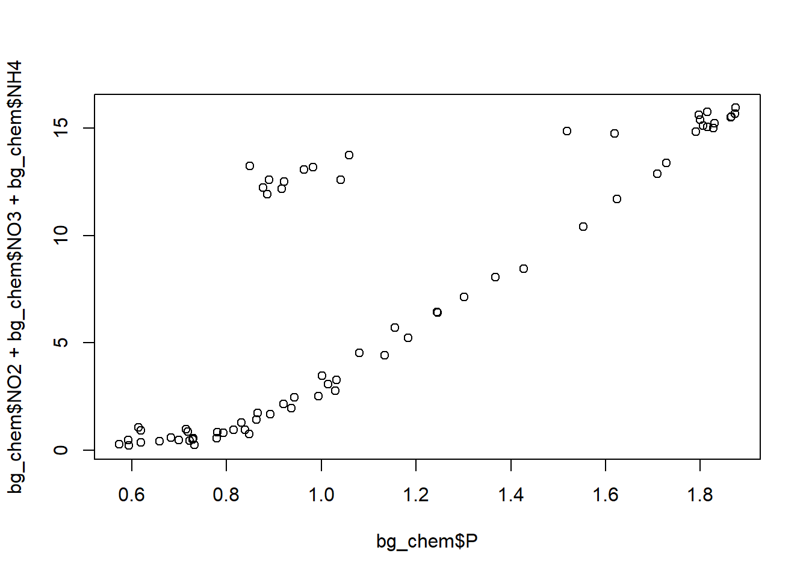

library(readr)
library(here)Mini literate analysis
Introduction
these data include different physical and chemical parameters measured at the north pole in the water column
set up
data
bg_chem <- read.csv(here("data/BGchem2008data.csv"))##exploring data
colnames(bg_chem) [1] "Date" "Time" "Station" "Latitude"
[5] "Longitude" "Target_Depth" "CTD_Depth" "CTD_Salinity"
[9] "CTD_Temperature" "Bottle_Salinity" "d18O" "Ba"
[13] "Si" "NO3" "NO2" "NH4"
[17] "P" "TA" "O2" str(bg_chem)'data.frame': 70 obs. of 19 variables:
$ Date : chr "3/21/2008" "3/21/2008" "3/21/2008" "3/21/2008" ...
$ Time : chr "1899-12-31 21:56:46" "1899-12-31 21:56:46" "1899-12-31 21:56:46" "1899-12-31 21:56:46" ...
$ Station : chr "73N,140W" "73N,140W" "73N,140W" "73N,140W" ...
$ Latitude : num 73 73 73 73 73 ...
$ Longitude : num -140 -140 -140 -140 -140 ...
$ Target_Depth : int 20 60 85 190 310 20 60 85 190 310 ...
$ CTD_Depth : num 15.1 60.6 85.7 191.4 309.3 ...
$ CTD_Salinity : num 26.1 29.2 31.4 33.1 34.6 ...
$ CTD_Temperature: num -1.423 -0.934 -0.146 -1.478 0.258 ...
$ Bottle_Salinity: num 26.1 29.2 31.4 33.1 34.6 ...
$ d18O : num -3.5318 -3.1857 -2.1087 -1.4293 0.0847 ...
$ Ba : num 72.4 82.8 60.6 76.1 -99 ...
$ Si : num 2.46 2.82 7.54 36.58 8.06 ...
$ NO3 : num -0.0311 0.026 2.6964 15.8538 12.1601 ...
$ NO2 : num 0.0562 0.1726 0.0217 0.0246 -0.0013 ...
$ NH4 : num 0.1974 0.0558 0.0691 0.0591 0.0653 ...
$ P : num 0.593 0.732 1.03 1.875 0.877 ...
$ TA : num 1895 2094 2194 2268 2296 ...
$ O2 : num 9.25 -99 -99 -99 6.66 ...summary(bg_chem) Date Time Station Latitude
Length:70 Length:70 Length:70 Min. :72.05
Class :character Class :character Class :character 1st Qu.:72.97
Mode :character Mode :character Mode :character Median :74.05
Mean :74.04
3rd Qu.:75.26
Max. :76.32
Longitude Target_Depth CTD_Depth CTD_Salinity
Min. :-163.7 Min. : 20.0 Min. : 15.13 Min. :25.50
1st Qu.:-153.3 1st Qu.: 60.0 1st Qu.: 60.34 1st Qu.:30.17
Median :-149.8 Median : 85.0 Median : 85.78 Median :31.65
Mean :-148.1 Mean :123.8 Mean :125.42 Mean :31.45
3rd Qu.:-140.3 3rd Qu.:190.0 3rd Qu.:192.66 3rd Qu.:33.08
Max. :-136.5 Max. :430.0 Max. :442.17 Max. :34.82
CTD_Temperature Bottle_Salinity d18O Ba
Min. :-1.6843 Min. :25.50 Min. :-3.7310 Min. :-99.00
1st Qu.:-1.4906 1st Qu.:30.17 1st Qu.:-2.9615 1st Qu.: 64.08
Median :-1.2600 Median :31.65 Median :-2.0444 Median : 69.68
Mean :-0.9647 Mean :31.45 Mean :-2.0166 Mean : 60.95
3rd Qu.:-0.4777 3rd Qu.:33.08 3rd Qu.:-1.4939 3rd Qu.: 72.25
Max. : 0.7008 Max. :34.82 Max. : 0.2073 Max. : 86.09
Si NO3 NO2 NH4
Min. : 2.460 Min. :-0.0499 Min. :-0.00130 Min. :0.00535
1st Qu.: 3.915 1st Qu.: 0.7849 1st Qu.: 0.01285 1st Qu.:0.01603
Median : 8.424 Median : 4.7488 Median : 0.02475 Median :0.03465
Mean :13.292 Mean : 6.8571 Mean : 0.04766 Mean :0.05853
3rd Qu.:20.985 3rd Qu.:13.0425 3rd Qu.: 0.04469 3rd Qu.:0.06747
Max. :36.577 Max. :15.8538 Max. : 0.27300 Max. :0.37390
P TA O2
Min. :0.5732 Min. : -99 Min. :-99.000
1st Qu.:0.7986 1st Qu.:2136 1st Qu.:-99.000
Median :0.9725 Median :2203 Median :-99.000
Mean :1.1201 Mean :2089 Mean :-73.059
3rd Qu.:1.4956 3rd Qu.:2271 3rd Qu.:-99.000
Max. :1.8745 Max. :2312 Max. : 9.246 unique(bg_chem) Date Time Station Latitude Longitude Target_Depth
1 3/21/2008 1899-12-31 21:56:46 73N,140W 73.02083 -139.8885 20
2 3/21/2008 1899-12-31 21:56:46 73N,140W 73.02083 -139.8885 60
3 3/21/2008 1899-12-31 21:56:46 73N,140W 73.02083 -139.8885 85
4 3/21/2008 1899-12-31 21:56:46 73N,140W 73.02083 -139.8885 190
5 3/21/2008 1899-12-31 21:56:46 73N,140W 73.02083 -139.8885 310
6 3/22/2008 1899-12-31 21:45:27 72N,140W 72.05050 -140.1118 20
7 3/22/2008 1899-12-31 21:45:27 72N,140W 72.05050 -140.1118 60
8 3/22/2008 1899-12-31 21:45:27 72N,140W 72.05050 -140.1118 85
9 3/22/2008 1899-12-31 21:45:27 72N,140W 72.05050 -140.1118 190
10 3/22/2008 1899-12-31 21:45:27 72N,140W 72.05050 -140.1118 310
11 3/22/2008 1899-12-31 21:45:27 72N,140W 72.05050 -140.1118 430
12 3/22/2008 1899-12-31 01:36:12 72_40N,145W 72.68683 -144.8403 20
13 3/22/2008 1899-12-31 01:36:12 72_40N,145W 72.68683 -144.8403 60
14 3/22/2008 1899-12-31 01:36:12 72_40N,145W 72.68683 -144.8403 85
15 3/22/2008 1899-12-31 01:36:12 72_40N,145W 72.68683 -144.8403 190
16 3/22/2008 1899-12-31 01:36:12 72_40N,145W 72.68683 -144.8403 310
17 3/23/2008 1899-12-31 20:54:32 73_40N,136W 73.58650 -136.5412 20
18 3/23/2008 1899-12-31 20:54:32 73_40N,136W 73.58650 -136.5412 60
19 3/23/2008 1899-12-31 20:54:32 73_40N,136W 73.58650 -136.5412 85
20 3/23/2008 1899-12-31 20:54:32 73_40N,136W 73.58650 -136.5412 190
21 3/23/2008 1899-12-31 20:54:32 73_40N,136W 73.58650 -136.5412 310
22 3/23/2008 1899-12-31 20:54:32 73_40N,136W 73.58650 -136.5412 430
23 3/24/2008 1899-12-31 00:45:19 74N,140W 74.03933 -140.3112 20
24 3/24/2008 1899-12-31 00:45:19 74N,140W 74.03933 -140.3112 60
25 3/24/2008 1899-12-31 00:45:19 74N,140W 74.03933 -140.3112 85
26 3/24/2008 1899-12-31 00:45:19 74N,140W 74.03933 -140.3112 190
27 3/24/2008 1899-12-31 20:50:16 74_40N,146W 74.63550 -146.6717 20
28 3/24/2008 1899-12-31 20:50:16 74_40N,146W 74.63550 -146.6717 60
29 3/24/2008 1899-12-31 20:50:16 74_40N,146W 74.63550 -146.6717 85
30 3/24/2008 1899-12-31 20:50:16 74_40N,146W 74.63550 -146.6717 190
31 3/25/2008 1899-12-31 23:50:29 74_20N,143W 74.30100 -143.2840 20
32 3/25/2008 1899-12-31 23:50:29 74_20N,143W 74.30100 -143.2840 60
33 3/25/2008 1899-12-31 23:50:29 74_20N,143W 74.30100 -143.2840 85
34 3/25/2008 1899-12-31 23:50:29 74_20N,143W 74.30100 -143.2840 190
35 3/26/2008 1899-12-31 20:33:18 75N,150W 74.97817 -150.1445 20
36 3/26/2008 1899-12-31 20:33:18 75N,150W 74.97817 -150.1445 60
37 3/26/2008 1899-12-31 20:33:18 75N,150W 74.97817 -150.1445 85
38 3/26/2008 1899-12-31 20:33:18 75N,150W 74.97817 -150.1445 190
39 3/26/2008 1899-12-31 20:33:18 75N,150W 74.97817 -150.1445 310
40 3/27/2008 1899-12-31 00:19:50 74N,150W 74.05600 -149.8103 20
41 3/27/2008 1899-12-31 00:19:50 74N,150W 74.05600 -149.8103 60
42 3/27/2008 1899-12-31 00:19:50 74N,150W 74.05600 -149.8103 85
43 3/27/2008 1899-12-31 00:19:50 74N,150W 74.05600 -149.8103 190
44 3/27/2008 1899-12-31 19:48:20 73N,150W 72.97183 -149.8645 20
45 3/27/2008 1899-12-31 19:48:20 73N,150W 72.97183 -149.8645 60
46 3/27/2008 1899-12-31 19:48:20 73N,150W 72.97183 -149.8645 85
47 3/27/2008 1899-12-31 19:48:20 73N,150W 72.97183 -149.8645 190
48 3/27/2008 1899-12-31 22:59:41 72N,150W 72.06233 -150.0878 20
49 3/27/2008 1899-12-31 22:59:41 72N,150W 72.06233 -150.0878 60
50 3/27/2008 1899-12-31 22:59:41 72N,150W 72.06233 -150.0878 85
51 3/27/2008 1899-12-31 22:59:41 72N,150W 72.06233 -150.0878 190
52 3/27/2008 1899-12-31 22:59:41 72N,150W 72.06233 -150.0878 310
53 3/29/2008 1899-12-31 20:46:18 75_40N,158W 75.69883 -157.7145 20
54 3/29/2008 1899-12-31 20:46:18 75_40N,158W 75.69883 -157.7145 60
55 3/29/2008 1899-12-31 20:46:18 75_40N,158W 75.69883 -157.7145 85
56 3/29/2008 1899-12-31 20:46:18 75_40N,158W 75.69883 -157.7145 190
57 3/30/2008 1899-12-31 23:49:56 75_20N,154W 75.36000 -154.3053 20
58 3/30/2008 1899-12-31 23:49:56 75_20N,154W 75.36000 -154.3053 60
59 3/30/2008 1899-12-31 23:49:56 75_20N,154W 75.36000 -154.3053 85
60 3/30/2008 1899-12-31 23:49:56 75_20N,154W 75.36000 -154.3053 190
61 3/30/2008 1899-12-31 23:49:56 75_20N,154W 75.36000 -154.3053 310
62 3/30/2008 1899-12-31 20:20:40 76_20N,164W 76.32150 -163.6973 20
63 3/30/2008 1899-12-31 20:20:40 76_20N,164W 76.32150 -163.6973 60
64 3/30/2008 1899-12-31 20:20:40 76_20N,164W 76.32150 -163.6973 85
65 3/30/2008 1899-12-31 20:20:40 76_20N,164W 76.32150 -163.6973 190
66 3/30/2008 1899-12-31 20:20:40 76_20N,164W 76.32150 -163.6973 310
67 3/30/2008 1899-12-31 23:17:36 76N,161W 75.94083 -160.6185 20
68 3/30/2008 1899-12-31 23:17:36 76N,161W 75.94083 -160.6185 60
69 3/30/2008 1899-12-31 23:17:36 76N,161W 75.94083 -160.6185 85
70 3/30/2008 1899-12-31 23:17:36 76N,161W 75.94083 -160.6185 190
CTD_Depth CTD_Salinity CTD_Temperature Bottle_Salinity d18O
1 15.1270 26.0658 -1.423000 26.06580 -3.531769724
2 60.5559 29.1798 -0.934310 29.17980 -3.185650978
3 85.7471 31.4023 -0.145830 31.40230 -2.108726707
4 191.4073 33.1268 -1.477500 33.12680 -1.429345540
5 309.2524 34.6233 0.257820 34.62330 0.084677294
6 20.9588 26.1788 -1.400700 26.17880 -3.526825528
7 61.9388 30.0447 -0.795610 30.04470 -2.979463131
8 85.7727 31.6626 -0.379930 31.66260 -1.922317060
9 195.0833 33.2026 -1.487700 33.20260 -1.373966296
10 318.2476 34.6640 0.298000 34.66400 0.078249603
11 442.1700 34.8226 0.700850 34.81810 0.201863475
12 19.2180 26.7345 -1.360800 26.75160 -3.528803206
13 60.3180 30.5537 -0.961100 30.55370 -2.607138493
14 84.5930 31.6312 -0.957650 31.63120 -2.045436748
15 190.4047 33.2165 -1.529300 33.21650 -1.457529111
16 309.9182 34.4674 -0.195390 34.46740 -0.045858924
17 21.3451 25.4994 -1.380200 25.49940 -3.731035461
18 60.5570 29.3092 -0.804900 29.33170 -3.267730770
19 86.2632 31.5588 -0.347690 31.55880 -1.996979850
20 194.0801 33.2733 -1.417700 33.27325 -1.335398734
21 317.6200 34.6718 0.369420 34.68110 0.099511298
22 439.6800 34.8184 0.625600 34.81970 0.207302798
23 21.1905 27.0272 -1.472100 27.02720 -3.515947353
24 60.4238 29.1833 -1.150100 29.18330 -3.298387146
25 85.8494 31.0455 -0.474670 31.04550 -2.405894843
26 191.3721 32.9990 -1.516000 32.99900 -1.487691303
27 21.1842 28.1370 -1.491500 28.13695 -3.371566441
28 61.6088 30.4889 -0.923010 30.48890 -2.802942821
29 86.1200 31.3463 -0.656620 31.34630 -2.193773488
30 193.7434 32.8647 -1.522200 32.86470 -1.574714819
31 21.6200 27.3002 -1.481400 27.30500 -3.482324223
32 60.7670 29.3703 -1.290800 29.37030 -3.136205477
33 85.9408 31.1251 -0.401300 31.12510 -2.376721961
34 193.0119 33.0135 -1.531700 33.01350 -1.568781784
35 23.4361 28.9826 -1.582200 28.98255 -3.243996741
36 62.4982 29.9151 -1.213500 29.91510 -2.991824801
37 85.7871 31.1955 -0.568870 31.19550 -2.356943761
38 194.8971 32.9689 -1.531800 32.96890 -1.580648798
39 319.2249 34.5826 0.086213 34.58260 0.064899565
40 20.1959 29.0739 -1.590400 29.07390 -3.244985580
41 60.6041 30.9269 -1.297300 30.92690 -2.619005508
42 86.7658 31.7406 -1.196300 31.74060 -2.107243684
43 191.6203 32.9166 -1.582800 32.91660 -1.624160557
44 19.7420 28.0544 -1.315500 28.03270 -3.300364825
45 57.3670 31.9863 -1.229300 31.98625 -1.859521285
46 81.3108 32.4001 -1.369800 32.40010 -1.748763739
47 180.5395 33.5402 -1.657900 33.54020 -1.252824287
48 21.7306 30.6340 -1.442800 30.63400 -2.760419430
49 62.2806 32.1399 -1.204600 32.13990 -1.827876541
50 87.0298 32.5043 -1.345500 32.50425 -1.729974378
51 193.0275 33.7687 -1.364600 33.76870 -0.967029453
52 313.9584 34.6727 0.292770 34.67270 0.073799591
53 21.2313 30.0697 -1.641000 30.06970 -3.103901428
54 61.3343 30.9391 -0.639210 30.93905 -2.488469290
55 88.6151 31.8183 -0.486960 31.81830 -1.890177661
56 194.5295 33.1052 -1.526100 33.10520 -1.542080765
57 19.8341 29.5568 -1.436500 29.55680 -3.193562164
58 59.1452 30.7643 -1.499500 30.76430 -2.798492336
59 83.0630 31.3262 -0.951400 31.32620 -2.405400187
60 187.7139 32.8360 -1.570400 32.83600 -1.700801497
61 307.8234 34.5085 -0.142160 34.50850 0.001609135
62 22.3800 30.9310 -1.684300 30.94220 -2.833104541
63 61.5086 31.7202 -0.398730 31.72020 -2.043458598
64 89.8550 32.1401 -1.019500 32.14010 -1.782386161
65 195.0315 33.2134 -1.494700 33.21340 -1.512413700
66 317.5532 34.6620 0.358660 34.66200 0.167746397
67 22.1000 30.4723 -1.666400 30.47925 -2.907767331
68 60.9467 31.4854 -0.054501 31.48540 -2.124550022
69 86.5638 32.0375 -0.376100 32.03750 -1.844688224
70 184.9444 32.9979 -1.526400 32.99790 -1.464451457
Ba Si NO3 NO2 NH4 P TA O2
1 72.40000 2.45990 -0.03110 0.05620 0.19740 0.59340 1895.20 9.2460
2 82.84798 2.82420 0.02600 0.17255 0.05575 0.73175 2094.50 -99.0000
3 60.55257 7.54360 2.69640 0.02170 0.06910 1.02980 2194.20 -99.0000
4 76.13382 36.57680 15.85380 0.02460 0.05910 1.87450 2268.40 -99.0000
5 -99.00000 8.06340 12.16010 -0.00130 0.06530 0.87670 2296.50 6.6560
6 70.68430 2.78200 0.04800 0.04820 0.37390 0.59190 1902.90 9.1860
7 71.03583 3.81930 0.34640 0.03670 0.17080 0.77960 2132.60 8.8920
8 66.00000 11.80060 5.05830 0.01070 0.17680 1.18340 2200.80 7.9090
9 86.08832 35.89630 15.60030 0.00795 0.15370 1.81520 2276.45 6.4470
10 50.32705 11.38760 12.88890 0.00510 0.17870 0.96310 2281.30 -99.0000
11 45.07449 7.03600 13.09920 0.02250 0.11280 0.84960 2312.30 -99.0000
12 72.53020 2.85500 0.80930 0.15050 0.10280 0.61450 1944.55 6.5380
13 65.70000 4.29730 1.24150 0.02420 0.03580 0.83160 2176.20 -99.0000
14 69.86349 11.41170 5.65390 0.00500 0.05220 1.15550 2203.50 -99.0000
15 84.96633 32.92160 15.56240 0.02120 0.01860 1.79740 2271.05 -99.0000
16 49.65500 10.41930 12.15270 0.00840 0.01000 0.91630 -99.00 9.2265
17 73.04894 2.82850 -0.04990 0.06250 0.28310 0.57320 1877.70 -99.0000
18 74.32660 3.37330 0.32490 0.06390 0.05670 0.72150 -99.00 9.0630
19 60.00000 10.25845 4.35240 0.03045 0.03970 1.13340 2202.70 -99.0000
20 81.80000 34.70290 15.62870 0.02540 0.01430 1.87360 2302.60 -99.0000
21 45.07085 7.54110 11.89370 0.01260 0.00580 0.88540 2279.00 -99.0000
22 50.80000 6.99810 12.56620 0.01400 0.00560 0.88940 2290.50 6.8000
23 68.51509 2.58285 0.66370 0.08110 0.19080 0.61930 1955.90 9.1485
24 71.71966 3.39260 0.77670 0.18190 0.03650 0.71440 2109.90 -99.0000
25 67.05268 6.09730 2.10040 0.02450 0.04510 0.91990 2182.70 -99.0000
26 80.70000 33.52230 15.50840 0.01610 0.01180 1.86560 2270.80 6.5200
27 70.90000 3.15350 0.28060 0.27300 0.02400 0.68260 2029.70 -99.0000
28 67.49279 4.70045 0.90435 0.01180 0.02795 0.83940 2144.20 -99.0000
29 65.07775 8.58390 3.23060 0.01610 0.02390 1.03250 2195.20 8.2850
30 84.33850 31.06310 14.97270 0.02380 0.00800 1.82820 2292.25 6.6095
31 -99.00000 2.69420 0.14150 0.10410 0.12920 0.61870 1987.80 9.1990
32 70.10000 3.40180 0.29220 0.18990 0.02420 0.72820 2103.30 -99.0000
33 62.76323 6.53455 1.90445 0.04165 0.02020 0.93695 2189.05 -99.0000
34 71.70000 33.26380 15.18590 0.03730 0.00810 1.82970 -99.00 6.5400
35 69.50620 3.01400 0.23510 0.22460 0.02410 0.69890 2073.40 -99.0000
36 72.60000 3.86000 0.76070 0.02850 0.02400 0.79320 2152.30 -99.0000
37 62.24824 7.26380 2.51100 0.00640 0.01600 0.99370 2190.50 -99.0000
38 76.89819 32.42165 15.48450 0.01640 0.00800 1.86465 2265.20 -99.0000
39 46.42060 9.74460 12.41940 0.00490 0.08010 0.92160 2285.10 6.6065
40 67.79838 3.21295 0.67795 0.17495 0.02010 0.71860 2068.30 -99.0000
41 72.34669 6.64980 2.41630 0.02490 0.02410 0.94300 2168.20 -99.0000
42 66.57828 13.13780 6.36940 0.01820 0.01600 1.24620 2206.60 -99.0000
43 74.70000 30.23680 14.80860 0.00440 0.00800 1.79050 2267.70 -99.0000
44 70.30490 2.88700 0.22060 0.17650 0.04040 0.65900 2008.75 -99.0000
45 71.14294 17.57905 8.41020 0.02980 0.01210 1.42745 2219.60 -99.0000
46 71.20000 23.98720 11.66700 0.02700 0.01610 1.62460 2246.40 -99.0000
47 68.85549 28.31850 14.72770 0.02030 0.00810 1.61890 2293.10 -99.0000
48 63.74277 3.71400 0.60040 0.00910 0.15870 0.84730 2156.00 -99.0000
49 71.85146 21.95720 10.32030 0.00620 0.09620 1.55310 2224.90 -99.0000
50 72.85550 27.14030 12.77480 0.01050 0.07390 1.70950 2266.90 -99.0000
51 62.16735 27.86620 14.78710 0.00030 0.05960 1.51830 2292.85 -99.0000
52 55.90000 13.14455 13.63465 0.01035 0.08270 1.05920 2298.20 -99.0000
53 71.20000 4.08090 0.72070 0.09470 0.01610 0.78030 2153.10 -99.0000
54 70.11322 5.86790 1.68010 0.02950 0.01610 0.86510 2186.70 -99.0000
55 67.53751 14.12785 6.40705 0.02515 0.01205 1.24485 2217.90 -99.0000
56 71.79438 33.00920 15.09400 0.01360 0.00810 1.80660 2274.50 -99.0000
57 71.97526 3.38450 0.32350 0.19930 0.03800 0.72940 2118.80 -99.0000
58 76.05064 4.64880 1.36760 0.02070 0.02980 0.86250 2182.50 -99.0000
59 66.04219 8.26410 3.03420 0.02650 0.02160 1.01370 2205.80 -99.0000
60 72.53464 28.88080 13.34310 0.01090 0.01340 1.72790 2267.00 -99.0000
61 54.60000 12.96850 12.57915 0.01600 0.00535 1.04160 2294.95 -99.0000
62 69.10000 5.57030 1.59550 0.03160 0.04410 0.89200 2193.90 -99.0000
63 69.90399 10.23670 4.43920 0.05030 0.04600 1.08060 2212.20 -99.0000
64 68.56898 18.06685 7.95115 0.03145 0.06525 1.36715 2232.60 -99.0000
65 68.81181 34.71500 15.28870 0.02700 0.06820 1.79970 2275.00 -99.0000
66 54.66977 12.30900 13.09370 0.04570 0.05360 0.98190 2295.10 -99.0000
67 70.80000 4.28920 0.89055 0.03475 0.03350 0.81480 2170.90 -99.0000
68 67.30000 8.80460 3.41040 0.01200 0.03740 1.00130 2205.90 -99.0000
69 66.25171 15.66410 7.09490 0.02040 0.02050 1.30140 2225.20 -99.0000
70 -99.00000 32.62660 15.01710 0.02890 0.01200 1.81460 2272.60 -99.0000analysis
nitrate <- mean(bg_chem$NO3)
nitrite <- mean(bg_chem$NO2)
ammon <- mean(bg_chem$NH4)
phos <- mean(bg_chem$P)
nitrate_max <- max(bg_chem$NO3)###calculate mean redfield ratio
ratio <- (nitrate + nitrite + ammon / phos)###plot ratio
plot(bg_chem$P, bg_chem$NO2 + bg_chem$NO3 + bg_chem$NH4)